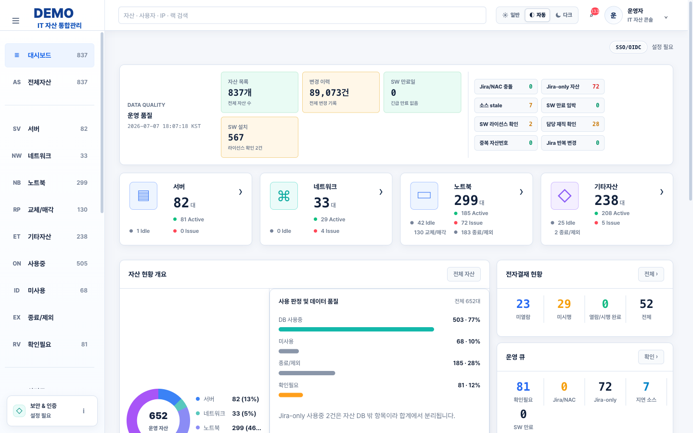
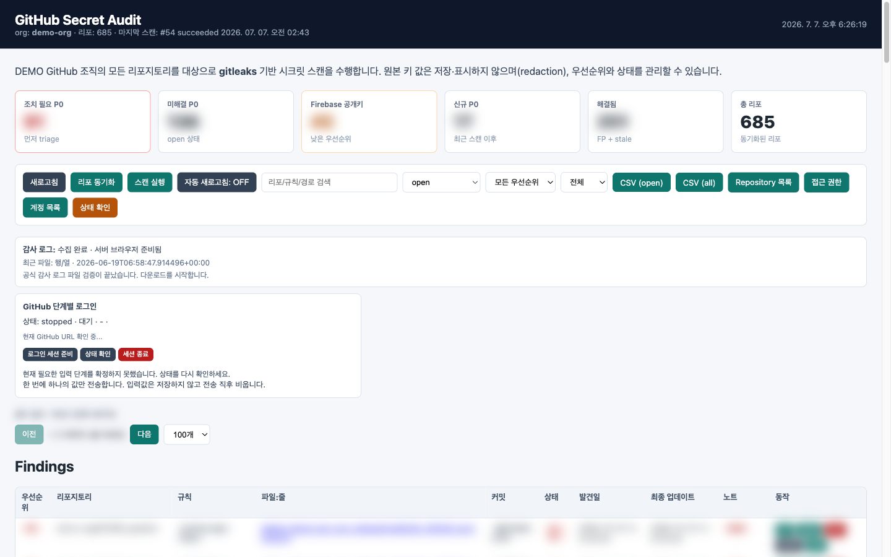
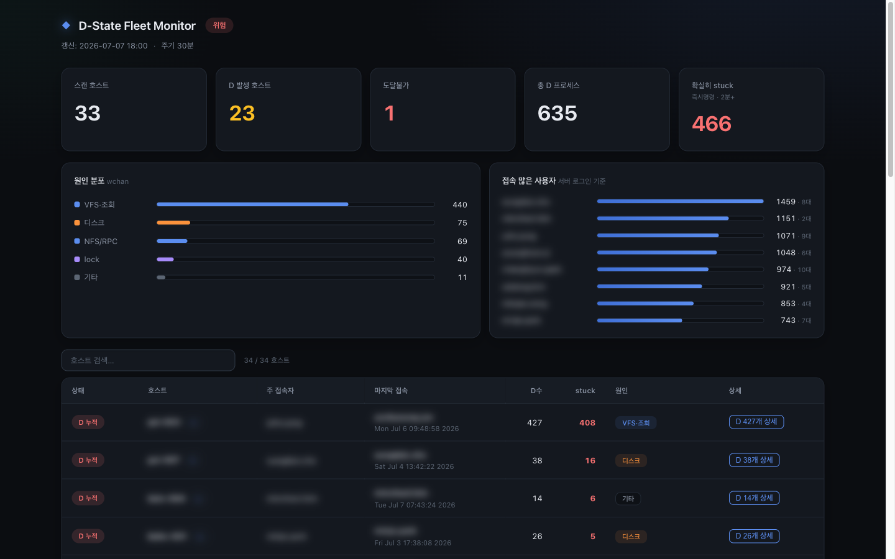
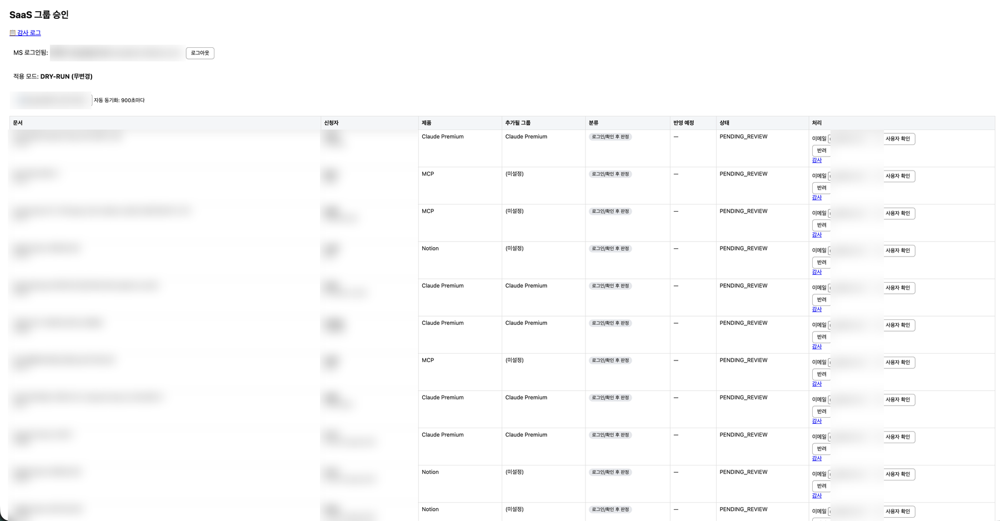

Linux 운영·Docker 배포·자동화 경험을 바탕으로, 문제를 절차대로 확인하고 기록하며 반복 작업을 자동화해 운영 부담을 줄이는 일을 해 왔습니다. 현재 AI 의료기업에서 GPU 서버를 포함한 사내 온프레미스 서버 운영, GitHub 조직 관리, 개발도구 설정·권한 관리를 맡고 있습니다.
추측보다 로그·상태값·변경 이력을 먼저 확인하고, 원인 구간을 나눠 좁혀갑니다. 장애 대응 현장에서 몸에 익힌 습관입니다.
조치 내용과 처리 이력을 남기고, 같은 확인 절차가 반복되면 문서화해 다음 대응에 반영합니다.
반복되는 확인·승인·점검은 스크립트와 배치로 줄입니다. 아래 프로젝트 전부가 이 원칙의 결과물입니다.
문제서버·VM·정보자산·담당자·승인 이력이 자산 관리 도구와 여러 Excel 대장에 흩어져 있어, 현황 파악마다 파일을 수작업으로 대조해야 했습니다.
결과수작업 대조를 웹 한 화면 조회로 전환하고 cron 자동 동기화로 최신 상태를 유지. 데이터 수집→정규화→API→UI→배치 갱신→로그까지 Linux 운영 서비스의 전체 흐름을 직접 구성했습니다.

문제저장소 수가 많아 시크릿(자격증명) 노출 여부를 수작업으로 점검하는 것이 불가능했습니다.
결과민감정보 원문은 저장하지 않는 redaction-first 원칙으로 수작업 점검을 일 단위 자동 감사로 전환. smoke·redaction 테스트로 동작을 검증했습니다.

문제NFS I/O 병목으로 중단 불가(D state) 상태에 빠진 프로세스가 쌓이면 서버가 통째로 멈추는 일이 있어, 멈추기 전에 선제 조치할 수단이 필요했습니다.
결과여러 Linux 서버의 프로세스 상태를 주기 수집해 대시보드로 게시, D state 누적을 조기에 확인하고 서버가 멈추기 전에 대응할 수 있게 했습니다.

문제SaaS 그룹 사용 승인 요청을 수작업으로 처리하며 누락·실수 위험이 있었습니다.
결과dry-run을 기본 동작으로 설계해 실수를 구조적으로 막고, 테스트 27건으로 동작을 검증했습니다.

사수 주도의 도입 프로젝트에 보조로 참여한 경험입니다. 역할 범위를 구분해 기재합니다.
물리 서버 노후화와 가상화 라이선스 비용 문제로 KVM 기반 Proxmox를 도입. 서버 초기 설정에 참여하고 VM 생성 표준·스토리지 구성을 정리한 초기 설정·사용 가이드를 직접 문서화했습니다.
서버 이미지 백업 체계 구축을 보조. 백업 대상·주기 정리와 복구 절차가 정해지는 과정을 가까이에서 익혔습니다.
계정 접근 기록·세션 감사·권한 최소화 기준을 보안 규정 항목과 대조하는 도입 검토를 보조했습니다.
systemd · cron · 로그 분석(journalctl) · 프로세스/자원 진단 · 권한 관리 · GPU 서버 포함 온프레미스 운영
Docker · Docker Compose(restart policy, volume, 환경변수, 서비스 노출) · smoke/stress 테스트 기반 검증
Python · Shell · Ansible · cron 배치 · REST API 설계
GitHub 조직·권한 운영 · 브랜치/PR 워크플로 · gitleaks 시크릿 감사 · redaction-first · dry-run 설계
GPU 서버 포함 온프레미스 서버 운영, GitHub 조직 관리, 개발도구 설정·권한 관리. 위 프로젝트 전부 재직 중 수행.
고객사 장애 접수·복구 지원, 현장/원격 상태 확인과 원인 구간 분리, 조치 이력 문서화.